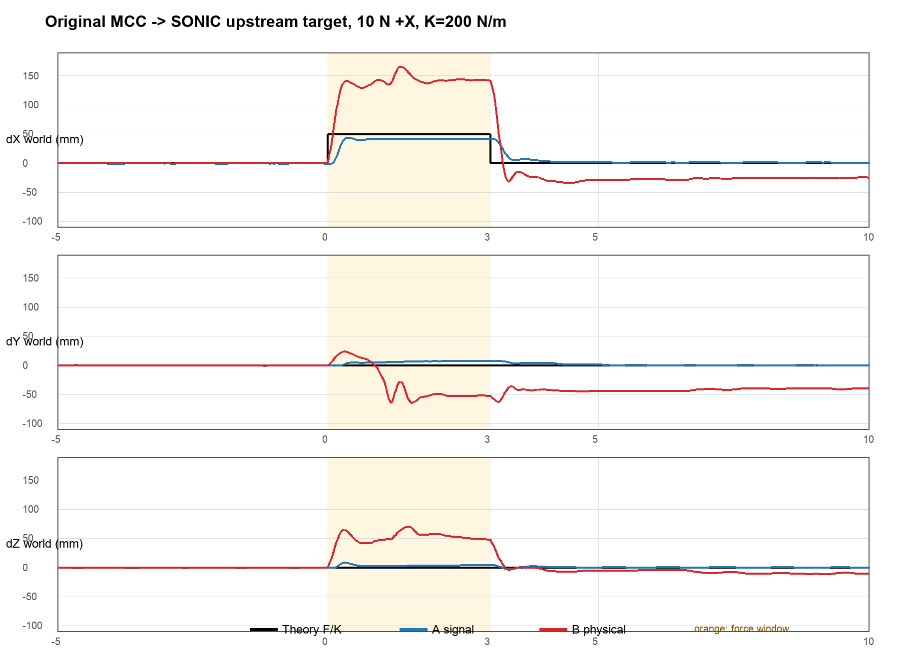

原始架构把 MCC 输出的位置残差直接加到 SONIC 的双腕目标；同一真实外力随后同时通过两条通路改变机器人：一条经 MCC 生成目标位移，另一条直接进入 MuJoCo 机器人动力学并改变全身状态，进而触发 SONIC 的闭环响应。两条响应在非线性闭环中耦合叠加，造成远大于理论值的全身后退和 Y/Z 串扰。
两组都完整运行到受力、撤力和恢复，schedule_complete，没有骨盆阈值中止。
| 条件 | 稳态位移 XYZ | X峰值 | 最大 YZ 串扰 |
|---|---|---|---|
| 理论 | (50,0,0) mm | 50 mm | 0 |
| A：仅10 N力信号 | (42.0,7.7,4.0) mm | 44.1 mm | 9.0 mm |
| B：10 N真实力双通路 | (142.9,−51.6,52.3) mm | 165.9 mm | 93.9 mm |
这非常清楚地证明：A虽然不完美，但基本接近理论；B加入真实物理力通路后，X严重过冲，并出现巨大YZ串扰和撤力后残差。它正是迭代掉该朴素架构的直接证据。

你要看的真实力双通路完整视频；真实物理力从 1:21 开始施加：
对照的力信号完整视频：
正在训练的 Adapter 核心信息：
| 基座 | 冻结官方 SONIC checkpoint，只训练 Adapter；SONIC 仍是唯一的 29 维全身关节目标生成器。 |
| 候选数据源 | BONES-SEED。当前从元数据筛出 21,127 条、约 45.6 小时的站立、下蹲、跪姿和上身操作 G1 动作，包含近乎等量的原始与镜像数据；它们仍需通过官方 SONIC 动作过滤和仿真回放，尚不是最终训练集。 |
| 输入 | 10 帧机器人本体状态与动作历史，以及当前双腕的 MCC 理论位移、力信号、实际物理力、实际腕位移、刚度 K 和上一帧 Adapter 输出。 |
| 输出 | 6 维双腕任务空间修正量 [左腕 XYZ，右腕 XYZ]；它被加到 SONIC 的双腕目标，再由冻结的 SONIC 统一输出 29 维全身关节目标。 |
| 训练分布 | PPO；左腕、右腕或双腕随机受力，方向为三维随机方向，力为 0–15 N，K 为 150–400 N/m；同时奖励双腕三维轨迹接近 MCC 理论轨迹，并保留平衡、全身动作跟踪、接触和关节限制。 |
| 当前状态 | 训练链路和 25 轮 smoke 已跑通；正式动作过滤、数据接入和长训练尚未完成。 |
Adapter 的必要性：固定公式只能给出理论位移，无法自动抵消真实外力经过机器人动力学和 SONIC 闭环后产生的、随姿态和受力变化的非线性增益与串扰。Adapter 同时看到理论目标和实际响应，学习应送给 SONIC 的上游修正量。
这个策略的优越性：不在关节层和 SONIC 抢控制权；能学习单臂、双臂、不同方向和姿态下的系统误差；把全身协调和平衡继续交给 SONIC；相比逐轴手调增益或查表，更适合处理非线性和跨姿态变化。它是否真正优于原始方案，仍需在正式训练后用“理论值、力信号、真实力”三方实验验证。